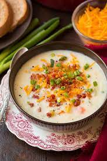

Country Potato Soup
Ingredients

- 1/2 lb of thick-cut bacon, crumbled (You may also use precooked baon bits)
- 4 tbsp (1/2 stick) of salted butter
- 6 garlic gloves, minced
- 1 medium white onion, cut into 1/2 inch dice
- 3 carrots, peeled and cut into 1/2 inch dice
- 3 celery stalks, cut into 1/2 inch dice
- 1/2 cup of all-purpose flour
- 6 medium-large russet potatoes (abour 3 lbs), scrubbed, peeled in stripes, and cut into 1 inch cubes
- One 48 oz box of chicken broth, or 6 cups of homemade chicken broth
- 1 tsp of kosher salt
- 1 tsp of ground pepper
- 1 bay leaf
- 2 cups of whole milk
- 1 cup of grated yellow and/or white sharp cheddar cheese (about 4 oz)
- 1 tsp fresh thyme leaves
Instructions
- To make the crumbled bacon: Line a large plate with paper towels.
- Preheat oven to 400°f. Arrange the bacon slices on a baking sheet. Bake until crispy, about 15-20 minutes.
Transfer to the paper towels to drain. Crumble or chop.
- To make the Country Potato Soup: In a large soup pot, melt the butter over medium heat. Add the garlic, onion,
carrots, and celery and cook, stirring occasionally, until the vegetables are tender, about 10 minutes.
- Add the flour and cook, stirring constantly, for 2 minutes. Add the potatoes, chicken broth, salt, pepper,
bay leaf, and bring to a boil. Reduce the heat an simmer until the potatoes are tender but still hold their
shape, about 15 minutes. Remove and discard the bay leaf. Slowly pour in the milk, stirring constantly.
Simmer until the soup is slightly thickened and the potatoes are fully cooked, about 15 minutes.
- Ladle the soup into bowels and top with cheddar, thyme, and crumbled bacon.
- Store leftover soup in a covered container in the refrigerator for up to days. Reheat in the microwave or in
a saucepan over medium-low heat
[Back to Dinners]
[Home]